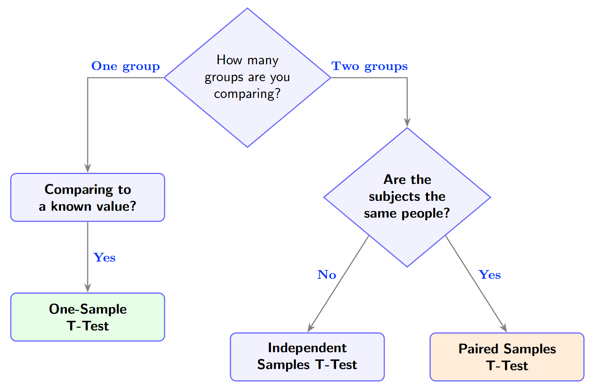

1 The Big Idea
You're testing a new study method. The class averaged 72 on a midterm. After using the new method, students scored an average of 76. Is that improvement significant to justify the new method, or could it be plain luck?
A t-test helps us answer this question: is the difference we observe bigger than what random chance alone would produce?
A t-test gives you a t-statistic — essentially a ratio of "signal" to "noise":
When the signal is large relative to the noise, the t-value is large, and we become confident the difference is real. When the signal is small relative to the noise, the difference could easily be due to random variation in the data.
The Role of the P-Value
Once we compute a t-statistic, we ask: "If there were truly no difference (the null hypothesis), how likely would we be to see a t-value this extreme or more?" That probability is the p-value.
By convention, if \( p < 0.05 \), we say the result is statistically significant — meaning it would be quite unlikely (less than 5% chance) to see such a large effect from random chance alone.
Three Flavours of T-Test
All three share the same logic (signal ÷ noise), but differ in what is being compared and how the noise is estimated:
| Type | Question It Answers | Example |
|---|---|---|
| One-sample | Is a sample mean different from a known value? | Do our students score differently from the national average of 70? |
| Independent samples | Do two separate groups have different means? | Do students using Method A score differently from those using Method B? |
| Paired samples | Does a measurement change within the same subjects? | Did the same students score differently before vs. after training? |
2 One-Sample T-Test
The simplest case: you have one group of measurements and want to know whether their mean differs from some known reference value \( \mu_0 \).
The Formula
Where \( \bar{x} \) is the sample mean, \( \mu_0 \) is the hypothesized population mean, \( s \) is the sample standard deviation, and \( n \) is the sample size. The denominator \( s / \sqrt{n} \) is called the standard error — it captures how much the sample mean typically bounces around from sample to sample.
One-Sample T-Test
Use the sliders below to change the sample mean, standard deviation, and sample size. Watch how the t-statistic and p-value respond. The blue curve is the t-distribution under the null hypothesis; the shaded region shows how extreme your observed t-value is.
\( H_a: \mu \neq \mu_0 \)
3 Independent Samples T-Test
Now suppose you have two separate groups — say, 30 students who used Study Method A and 30 different students who used Method B. You want to know if the two methods produce different average scores.
The key word here is independent: the people in Group A have no special relationship to the people in Group B. There's no pairing or matching.
The Formula
The numerator is just the difference between the two group means. The denominator combines the variability of both groups into a single standard error, accounting for the fact that each group contributes its own spread and sample size.
Compare Two Groups
Drag the sliders to adjust each group's mean, standard deviation, and sample size. The visualization shows both group distributions overlaid, along with the resulting t-statistic. Notice how overlap between the distributions relates to the p-value.
4 Paired Samples T-Test
Sometimes your two measurements come from the same subjects. For example, you test the same 20 students before and after a tutoring program. Each student has a "before" score and an "after" score.
The paired t-test is clever: instead of comparing two groups, it reduces the problem to a one-sample test on the differences. For each subject, compute \( d_i = x_{\text{after},i} - x_{\text{before},i} \), then test whether the mean of those differences is zero.
The Formula
Where \( \bar{d} \) is the mean of the pairwise differences and \( s_d \) is the standard deviation of those differences. This is literally a one-sample t-test on the \( d_i \) values, with \( \mu_0 = 0 \).
Paired Differences
This visualization shows individual subjects as connected dots (before → after). The bar chart on the right shows each subject's difference score. Try the "Regenerate Data" button to see how different datasets yield different t-values.
Notice that even when the true effect is positive, individual samples can produce non-significant results — especially with small \( n \) or high variability. This is the reality of sampling: statistical tests are not certainties, they're probabilistic judgments.
5 Choosing the Right Test
The decision tree is straightforward:

Assumptions
All t-tests assume that the data (or differences, for paired tests) are approximately normally distributed, or that the sample size is large enough that the Central Limit Theorem kicks in (roughly \( n > 30 \)). For the independent-samples test, Welch's version does not require equal variances — which is why it's generally preferred over the classic "Student's" version.
Effect Size: Cohen's d
Statistical significance tells you whether an effect exists; effect size tells you whether it matters. Cohen's \( d \) expresses the difference in standard deviation units:
Rules of thumb: \( d \approx 0.2 \) is a small effect, \( d \approx 0.5 \) is medium, and \( d \approx 0.8 \) is large. A study might find a "significant" p-value with a tiny effect size if the sample is very large — statistically real, but practically meaningless.